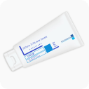

@@include('components/D-navigation.html')
@@include('components/D-header.html')
Your Basket
Products you have requested are listed here.
| Product | Price | Quantity | Subtotal | |
|---|---|---|---|---|
|

Differin 0.1% Tabs
|
£16.43 | @@include('components/Counter.html') | £16.43 | |
|
|
£16.43 | @@include('components/Counter.html') | £16.43 |
@@include('components/Total-price-block.html')